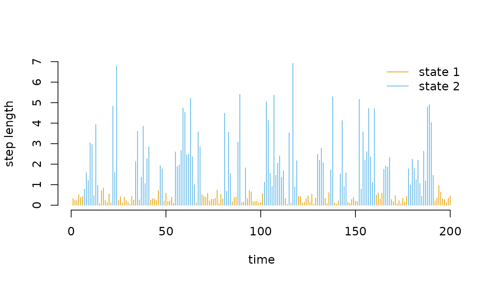
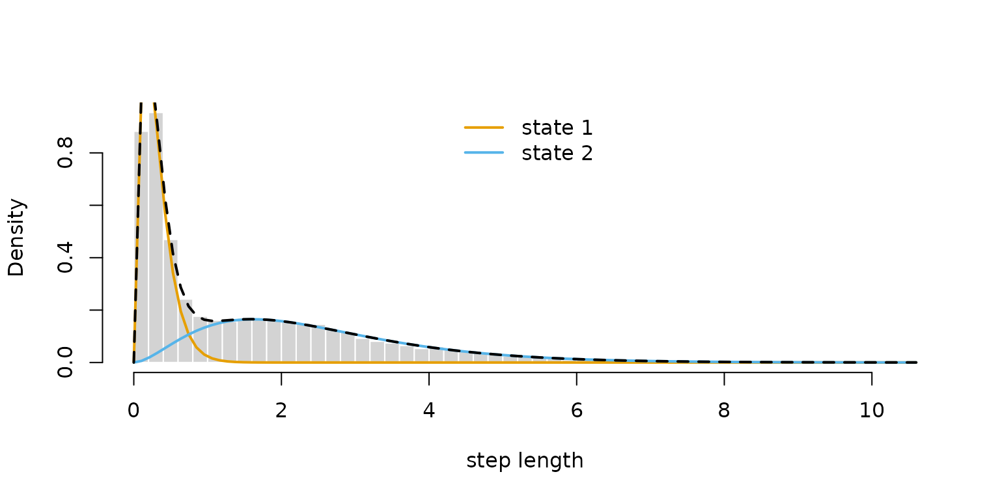
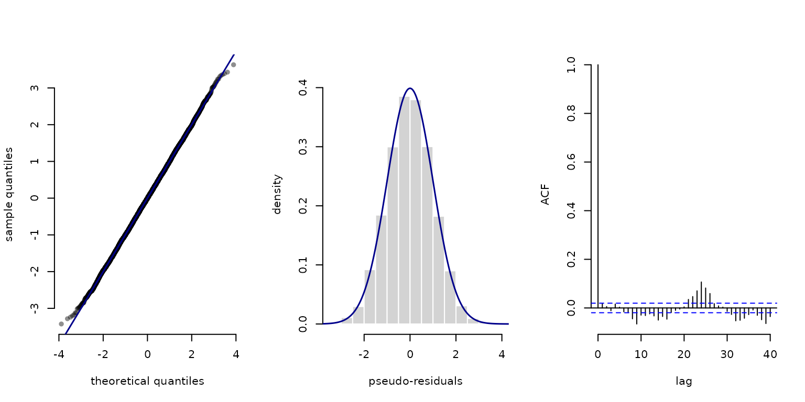

2 Automatic differentiation via RTMB
Jan-Ole Fischer
LaMa_and_RTMB.RmdBefore diving into this vignette, we recommend reading the vignette Introduction to LaMa.
Automatic differentiation (AD) is available in R through
the RTMB package. Using RTMB, you can define
the likelihood for any statistical model as plain R code
and have access to fast and exact derivatives of any order
(without doing any calculations by hand!). This enables the fitting of
very complicated models, potentially with complex random effect
structures.
LaMa is fully compatible with AD provided by
RTMB. Estimation of latent Markov models with AD is much
faster and more convenient, while model specification is very smooth and
less prone to errors. Let’s find out how this works! We begin by loading
the LaMa package, which automatically loads
RTMB as well.
For the purpose of this vignette, we will analyse the
trex data set contained in the package. It contains hourly
step lengths of a Tyrannosaurus rex, living 66 million years ago, and we
aim to understand its behavioural process using HMMs.
head(trex, 5)
#> tod step angle state
#> 1 9 0.3252437 NA 1
#> 2 10 0.2458265 2.234562 1
#> 3 11 0.2173252 -2.262418 1
#> 4 12 0.5114665 -2.958732 1
#> 5 13 0.3828494 1.811840 1The workflow with RTMB is always very similar. We need
to
- define the negative log-likelihood function,
- turn it into an AD objective function, and
- fit the model by numerical optimisation of the latter.
RTMB provides many functions that make the process of
specifying a likelihood function and calculating standard deviations of
estimates really simple.
We start by fitting a simple stationary HMM with state-dependent
gamma distributions for the step lengths. As a first step, we define the
initial parameter list par containing unconstrained
(real-valued) parameters and a dat list that contains the
data and potential hyperparameters – here N, the number of hidden states. The latter is
not strictly necessary but provides a neat way of wrapping everything
needed for the model fit.
par = list(
log_mu = log(c(0.3, 1)), # initial means for step length (log-transformed)
log_sigma = log(c(0.2, 0.7)), # initial sds for step length (log-transformed)
eta = rep(-2, 2) # initial t.p.m. parameters (on logit scale)
)
dat = list(
step = trex$step, # hourly step lengths
N = 2
)Because par is a named list, accessing the parameters
inside the likelihood is very convenient – annoying and error-prone
indexing of parameter vectors is gone! We define the negative
log-likelihood function in a similar fashion to basic numerical ML:
nll = function(par) {
getAll(par, dat) # makes everything contained available without $
Gamma = tpm(eta) # computes transition probability matrix from unconstrained eta
delta = stationary(Gamma) # computes stationary distribution
# Parameter transformations for strictly positive parameters
mu = exp(log_mu)
sigma = exp(log_sigma)
# Reporting statements for later use
REPORT(mu); ADREPORT(mu)
REPORT(sigma); ADREPORT(sigma)
# Calculating all state-dependent densities
allprobs = matrix(1, nrow = length(step), ncol = N)
ind = which(!is.na(step)) # only for non-NA obs.
for(j in 1:N){
allprobs[ind,j] = dgamma2(step[ind], mu[j], sigma[j])
}
-forward(delta, Gamma, allprobs) # simple forward algorithm
}A few points should be made here:
The likelihood is a function of the parameters to be estimated only while data and other parameters are not passed as an argument at this stage. This is something to get used to (I know), but just the way
RTMBworks.The
getAll()function is very useful. It unpacks both theparand thedatlist, making all elements available without the$operator.
Important:
nllreadsdatdirectly from the global environment at the timeMakeADFun()is called, which bakes a snapshot ofdatinto the compiled objective function. Any changes todatafter that point will have no effect on the optimisation. Always finalisedatbefore callingMakeADFun().
Parameter transformations are still necessary: all parameters in
parshould be unconstrained and transformed to their natural scale inside the likelihood.The
REPORT()function offered byRTMBis really convenient. Any quantities calculated in the likelihood function (for which you have written the code anyway), if reported, will be available after optimisation, while the report statements are ignored during optimisation.For simple parameter transformations,
ADREPORT()is also great. It calculates standard deviations forADREPORT()ed quantities, based on the delta method. Just note that the delta method is not advisable for complex non-linear and multivariate transformations.
Having defined the negative log-likelihood, we can now create the
automatically differentiable objective function. At this point,
RTMB takes nll and generates its own (very
fast) version of it, including a gradient. We set
silent = TRUE to suppress printing of the optimisation
process.
obj = MakeADFun(nll, par, silent = TRUE) # creating the AD objective functionLet’s check out obj:
names(obj)
#> [1] "par" "fn" "gr" "he" "hessian"
#> [6] "method" "retape" "env" "report" "simulate"
#> [11] "force.update"It contains the initial parameter par (now transformed
to a named vector), the objective function fn (which in
this case just evaluates nll but faster), its gradient
gr and Hessian he. If we call these functions
without any argument, we get the corresponding values at the initial
parameter vector.
obj$par
#> log_mu log_mu log_sigma log_sigma eta eta
#> -1.2039728 0.0000000 -1.6094379 -0.3566749 -2.0000000 -2.0000000
obj$fn()
#> [1] 16378.66
obj$gr()
#> [,1] [,2] [,3] [,4] [,5] [,6]
#> [1,] 609.4426 -2272.55 94.1283 -12144.32 151.3179 -181.5449We are now ready to fit the model by optimising the objective
function. The routine nlminb() is very robust and allows us
to provide a gradient function. While we also have access to the Hessian
function, we do not supply it to nlminb() because
optimisation is much faster if we use a quasi-Newton algorithm that
approximates the current Hessian based on previous gradient evaluations,
compared to using full Newton-Raphson.
opt = nlminb(obj$par, obj$fn, obj$gr) # minimisationWe can check out the estimated parameter and function value by
opt$par
#> log_mu log_mu log_sigma log_sigma eta eta
#> -1.1923951 0.9185717 -1.6018327 0.3993241 -1.6519372 -1.5641927
opt$objective
#> [1] 10847.12Note that the names par and objective are
determined by nlminb(). If you use a different optimiser,
these may be called differently.
However, RTMB provides a nicer way to get the estimates.
obj is automatically updated after the optimisation. Note
that calling obj$gr() after optimisation now gives the
gradient at the optimum, while obj$par is not updated but
still the initial parameter vector (kind of confusing). To get our
estimated parameters on their natural scale, we don’t have to do the
backtransformation manually. We can just run the reporting:
mod = report(obj) # runs the reporting from the negative log-likelihood once
(delta = mod$delta) # stationary distribution
#> S1 S2
#> 0.4817329 0.5182671
(Gamma = mod$Gamma) # estimated tpm
#> S1 S2
#> S1 0.8269542 0.1730458
#> S2 0.1608473 0.8391527
(mu = mod$mu) # estimated state-dependent means
#> [1] 0.3034935 2.5057090
(sigma = mod$sigma) # estimated state-dependent sds
#> [1] 0.2015268 1.4908167This works because of the REPORT() statements in the
likelihood function. Note that delta, Gamma
and allprobs are always reported by default when using
forward() which is very useful for downstream tasks like
state decoding or residuals calculation. The viterbi and
stateprobs functions either take these as arguments or,
more conveniently, can also take the whole reported mod
object as an input. Because the state-dependent parameters depend on the
specific model formulation, these need to be reported manually by the
user specifying the likelihood. Having all the parameters, we can plot
the decoded time series
# manually
mod$states = viterbi(mod$delta, mod$Gamma, mod$allprobs)
# or much simpler
mod$states = viterbi(mod = mod)
# defining color vector
color = LaMaColors(2)
plot(trex$step[1:200], type = "h", xlab = "time", ylab = "step length",
col = color[mod$states[1:200]], bty = "n")
legend("topright", col = color, lwd = 1, legend = c("state 1", "state 2"), bty = "n")
or the estimated state-dependent distributions.
hist(trex$step, prob = TRUE, breaks = 40,
bor = "white", main = "", xlab = "step length")
for(j in 1:2) curve(delta[j] * dgamma2(x, mu[j], sigma[j]),
lwd = 2, add = T, col = color[j])
curve(delta[1]*dgamma2(x, mu[1], sigma[1]) + delta[2]*dgamma2(x, mu[2], sigma[2]),
lwd = 2, lty = 2, add = T)
legend("top", lwd = 2, col = color, legend = c("state 1", "state 2"), bty = "n")
Note that because we have used report(),
mod now has class “LaMaModel”, which permits the use of
AIC() and BIC():
We can also use the sdreport() function to directly give
us standard errors for our unconstrained parameters and everything we
ADREPORT()ed.
sdr = sdreport(obj)We can then get an overview of the estimated parameters and
ADREPORT()ed quantities as well as their standard errors
by
summary(sdr) # see ?summary.sdreport for more info
#> Estimate Std. Error
#> log_mu -1.1923951 0.011461828
#> log_mu 0.9185717 0.009076411
#> log_sigma -1.6018327 0.016858309
#> log_sigma 0.3993241 0.013479572
#> eta -1.6519372 0.042684391
#> eta -1.5641927 0.041157505
#> mu 0.3034935 0.003478590
#> mu 2.5057090 0.022742845
#> sigma 0.2015268 0.003397402
#> sigma 1.4908167 0.020095571To get the estimated parameters or their standard errors in list format, type
# estimated parameter in list format
as.list(sdr, "Estimate")
# standard errors in list format
as.list(sdr, "Std")and to get the estimates and standard errors for
ADREPORT()ed quantities in list format, type
# adreported parameters as list
as.list(sdr, "Estimate", report = TRUE)
# their standard errors
as.list(sdr, "Std", report = TRUE)Lastly, the automatic reporting with LaMa and
RTMB together makes calculating pseudo-residuals really
convenient:
pres_step = pseudo_res(obs = trex$step, # observation sequence
dist = "gamma2", # which parametric CDF to use
par = list(mean = mu, sd = sigma), # estimated pars for that CDF
mod = mod) # model object
plot(pres_step, hist = TRUE)
Tips and common issues
There are some commonly occuring issues with RTMB to
keep in mind. I list the main ones I have encountered here – please let
me know if you encounter more so they can be added.
Non-standard distributions
If you need a non-standard probability distribution, existing
implementations will likely fail due to AD incompatibility. Check
whether the distribution is available in RTMBdist,
which provides a library of AD-compatible distributions for use inside
likelihood functions.
Operator overloading
A typical issue is that some operators may need to be overloaded to
allow for automatic differentiation. In typical model setups
LaMa functions handle this automatically, but if you take a
more individualistic route and encounter an error like
stop("Invalid argument to 'advector' (lost class attribute?)")you might have to overload the operator yourself. To do this put
"[<-" <- ADoverload("[<-")as the first line of your likelihood function. If the error still prevails also add
"c" <- ADoverload("c")
"diag<-" <- ADoverload("diag<-")which should hopefully fix the error.
Initialising with NA
A common problem occurs when initialising objects with
NA values and then filling them with numeric
values. NA is logical, which causes type mismatches that
break automatic differentiation. Always initialise with
numeric or NaN values instead. For example,
avoid
and use
Wrapping arrays in AD()
If you create an array and fill it with something
parameter-dependent, wrap it in AD():
This ensures X is an AD object from the start and that
classes are compatible. Wrapping in AD() is generally a
good idea to resolve the above error, as it introduces no meaningful
overhead when not needed.
No if statements on parameters
You cannot use if statements on parameters
directly, as these are not differentiable. RTMB
builds the tape (computational graph) at the initial parameter
value, so if branches depending on a parameter will produce
gradients that are wrong elsewhere. RTMB will fail, likely
without a helpful error message. if statements that do not
involve parameters are typically fine, since the branch is fixed
throughout optimisation.
Byte compiler side effects
Some unfortunate side effects of R’s byte compiler
(enabled by default) can interfere with RTMB. If you
encounter an error not covered above, try disabling it with
compiler::enableJIT(0)
#> [1] 3Further reading
For more information on RTMB, see its documentation or the
TMB users Google
group.
Continue reading with Extensions.